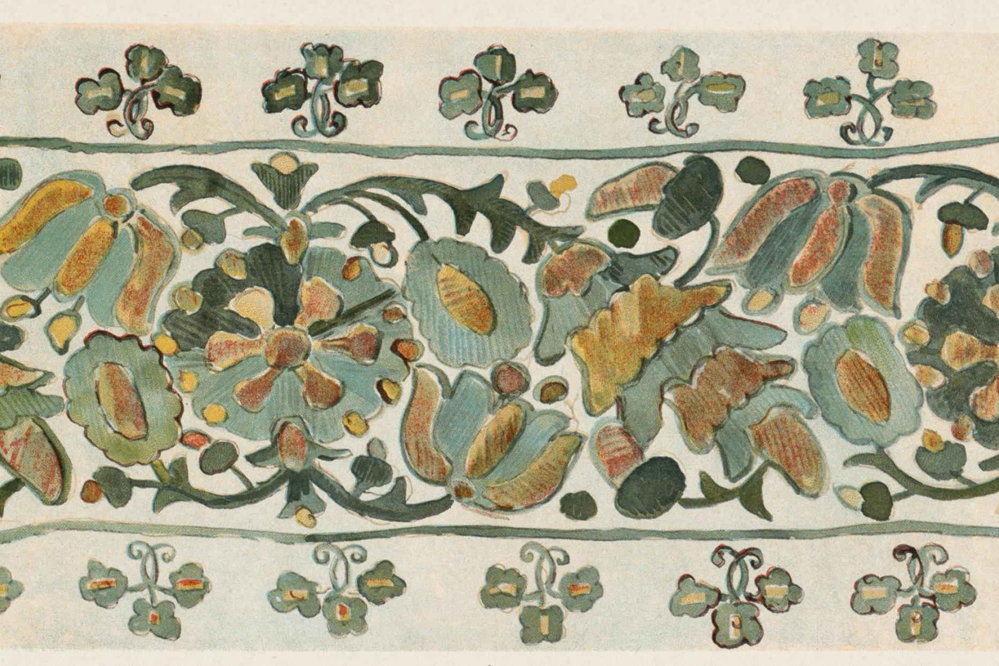

Undoing Empire, One Plant at a Time
Quote, 'If a book needs great footnotes, a dataset needs great metadata. Most researchers will tell you that composing either one is anticlimactic at best and tedious at worst. But what if we... found a way to streamline the production of metadata? ...What if we built real — possibly entertaining — human conversation into the process?' Read about the Harvard Map Collection's 2023 partnership with Dr. Kelly O'Neill.

Floral motif from Ukrainian textile produced in 1902.This year, the Harvard Map Collection partnered with Kelly O’Neill from the Davis Center on a project to demonstrate the value of our GIS data curation services. Dr. O’Neill’s project aims to capture data about historic biodiversity in the Ukraine. The Harvard Map Collection worked with her team to co-develop robust and useful metadata, so that the sources can be archived for long-term discovery and reuse.
You can learn more about the project in this Davis Center article.
This project was funded by an Advancing Open Knowledge grant from the Harvard Libraries.